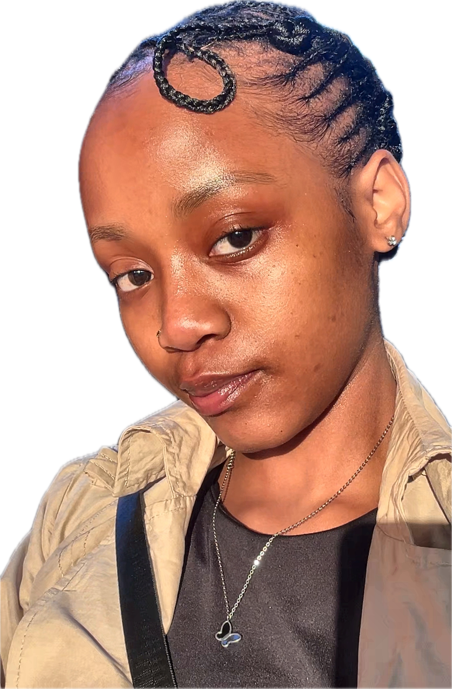

FULL STACK DEVELOPER · SOUTH AFRICA
Building thoughtful
digital experiences
with clean code.
Hi, I'm Tina Ayanda Fezani — a junior full-stack developer who turns ideas into responsive, accessible web experiences. I'm actively seeking an internship or junior developer role where I can grow, contribute, and keep building.
